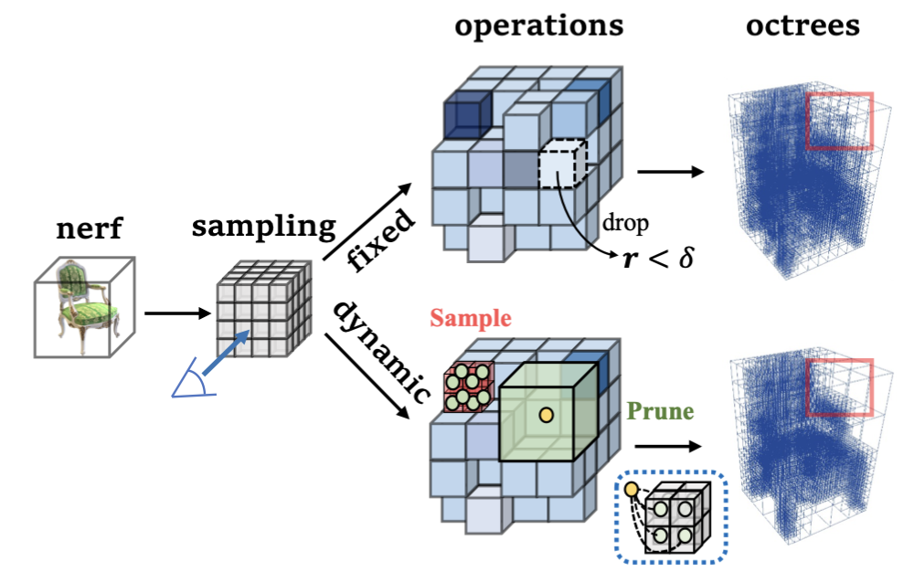
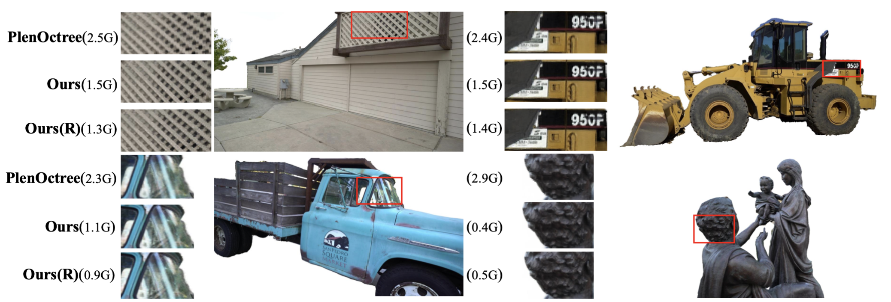

Dynamic PlenOctree for Adaptive Sampling Refinement in Explicit NeRF
-
Haotian Bai
AI Thrust, HKUST(GZ)
-
Yiqi Lin
AI Thrust, HKUST(GZ)
-
Yize chen
AI Thrust, HKUST(GZ)
Dept. of CSE, HKUST -
Addison Lin Wang
AI Thrust, HKUST(GZ)
Dept. of CSE, HKUST

Abstract
The explicit neural radiance field (NeRF) has gained considerable interest for its efficient training and fast inference capabilities, making it a promising direction such as virtual reality and gaming. In particular, PlenOctree (POT) [1], an explicit hierarchical multi-scale octree representation, has emerged as a structural and influential framework. However, POT’s fixed structure for direct optimization is sub-optimal as the scene complexity evolves continuously with updates to cached color and density, necessitating refining the sampling distribution to capture signal complexity accordingly. To address this issue, we propose the dynamic PlenOctree (DOT), which adaptively refines the sample distribution to adjust to changing scene complexity. Specifically, DOT proposes a concise yet novel hierarchical feature fusion strategy during the iterative rendering process. Firstly, it identifies the regions of interest through training signals to ensure adaptive and efficient refinement. Next, rather than directly filtering out valueless nodes, DOT introduces the sampling and pruning operations for octrees to aggregate features, enabling rapid parameter learning. Compared with POT, our DOT outperforms it by enhancing visual quality, reducing over 55.15/68.84% parameters, and providing 1.7/1.9 times FPS for NeRF-synthetic and Tanks & Temples, respectively.
Inspiration
While the POT framework is effective, its fixed octree structure can limit its adaptability to varying scene complexities. We introduce hierarchical feature fusion with sampling/pruning to overcome this limitation, as illustrated by the dashed box below. Varying colors on the grid represent the training signals. Internal nodes are denoted in orange, while leaf nodes in orange. Pruning occurs in regions of weak signal, where cached properties in leaf nodes are aggregated, and the averaged value is propagated to internal nodes, which become the new leaves. Complementary sampling takes place in the red regions. The resulting sampling distribution exhibits significant improvement, as highlighted by the red boxes in our final octree results.
Comparison on octree representations
DOT shows the more compact structure of DOT, resulting in fewer ray intersections, explaining our significant rendering speed boost.

Comparison on visual quality and memory consumption
DOT provides more details in complex regions, such as sharper reflections on windows and more evident edges on fences.
Demo
BibTeX
@inproceedings{Bai2023DOT,
title={Dynamic PlenOctree for Adaptive Sampling Refinement in Explicit NeRF},
author={Haotian Bai, Yiqi Lin, Yize Chen, Lin Wang},
booktitle = {IEEE International Conference on Computer Vision (ICCV)},
year={2023}
}